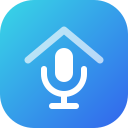

Pixora Voice
Your home. Just ask.
What would you like to know?
Ask a home question, or tell your devices what to do.
Start with a question
Choose an example to put it in the question box.
One request per wake word.
It stops listening after each reply. Say “Okay Nabu” again for a follow-up within 90 seconds.
Talking to a satellite?
“In here” uses that speaker’s room. From this page, include a room name in your request.
What you can askEveryday questions, controls and clear limits
Time and weather: “What time is it?”, “What day is it?”, “What's it like outside?” or “Will it rain tomorrow?” Share one weather entity with Assist; its provider may require internet.
Timers on your satellite: “Set a timer for ten minutes”, “Pause the timer”, “Resume the timer”, “Cancel the timer” or “How much time is left?” Uses HA's native timers; your speaker must support them. The web page cannot ring a satellite timer. Maximum duration: 24 hours.
More controls: “Set the thermostat to 72 degrees”, “Turn the heat up two degrees”, “Set the kitchen fan to high”, “Close the kitchen blinds”, “Set the ceiling light to red”, “Make it brighter”, “Activate Movie scene”, “Pause the Living Room TV” or “Set Living Room TV volume to 30 percent”. Devices must be shared with Assist and report support. Media play resumes existing media; it does not search music services. Doors, locks, gates and garages are not opened by these commands.
Recent history: “When did the front door last open?” Checks one shared device's Recorder history over the last 24 hours, only when asked. No stored change means no guessed answer.
Planner: Ask about today, tomorrow, weekdays, this or next weekend, week or month, or a person's next appointment. Planner must be enabled and paired; private items stay private. Meals support today, tonight and tomorrow.
Flow variables: “What's the value of isKitchenMotion?” Reads the existing global variable without changing it. Refresh Voice triggers to learn up to 32 variable names. This uses the paired Home Control connection and requires internet; Planner can be off.
Speech-to-Phrase uses a small trained vocabulary. After this update, use Prepare added phrases, Refresh Planner phrases if enabled, and Refresh Voice triggers for variable names. Common named spoken timers include pizza, pasta, tea, coffee, laundry, cooking, oven and eggs. Relative controls need a unique device in the speaker's room or a fresh-wake follow-up after naming one device. No LLM, continuous listening or extra polling.
Your day, just ask
Ask about schedules, anything on your Calendar, meals, shared lists and household home status. Uses your existing paired Pixora Home Control app; no extra login. Planner answers require internet. Home control and speech processing stay local, with no LLM.
Anyone using a satellite can hear household-shared answers. Private items stay private. This connection answers questions; make changes in Planner. Enabling it learns your household names and teams and restarts Speech-to-Phrase once.
Refresh after changing household names or followed teams. Try “What's for dinner?” or “What is on the calendar today?” Include a person's name for their schedule or home status.
Response timingCheck recent requests when an answer feels slow
Loads up to five existing Pixora Voice Assist traces only when you press the button. Nothing runs in the background. Recognition is measured after HA detects the end of speech. Speech preparation may be deferred by Piper; it does not measure when sound reaches the speaker.
Say it. Start a Flow.
Add a Voice trigger in Flows with a phrase such as “Good night,” save and enable the Flow, then use Refresh Voice triggers in Flows when prompted. Say your satellite’s wake word followed by the exact phrase. Anyone using your satellites can start these Flows. Requires your paired Pixora Home Control app and internet; Planner integration can stay off.
Refresh after adding, changing or removing voice phrases. Learns up to 64 trigger phrases and 32 global variable names, then restarts Speech-to-Phrase once. Repeating a phrase restarts its matching path. Actions already sent may finish. It stops listening after each reply.
Setup & maintenanceConnect Assist, speech and your room speakers
- Install the Assist integration below, then restart Home Assistant once.
- In Settings → Devices & services, add Pixora Voice.
- In Settings → Voice assistants, choose Pixora Voice with local Speech-to-Phrase and Piper.
- Assign each satellite to its room and share the devices you want to use with Assist.
Updates only Pixora Voice’s integration folder and keeps a local backup. Your current assistant settings stay in place. Restart Home Assistant after installation.
After updating the Assist integration, prepare the added time, weather, timer, history and control phrases once. Restarts Speech-to-Phrase to learn the small added vocabulary; preserves your existing phrase files.